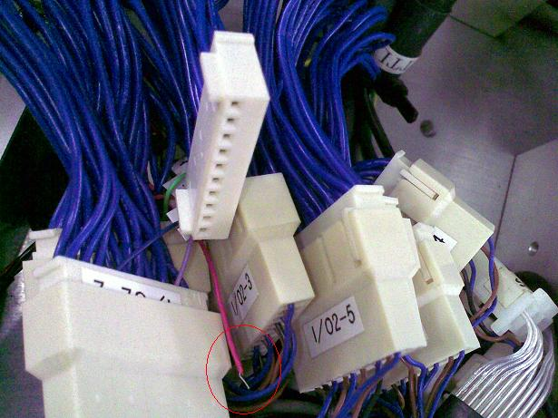

Service History
Subject: NS-6040 Input Shuttle sensors not working and IFUNT "Verify Error!"
Handler Model: NS-6040 (S/N:18288)
Controller: SRC520
Date: 5 Apr 2010
Symptom
Yesterday, running check without devices carried out with no issues on MMI ver 2.0c. This morning, customer requested to upgrade the MMI version for the NS-6040 (S/N:18288) to their customise software version (MMI ver 9.10_SAS). After MMI version upgraded, temperature calibration and verification were carried out. Before starting on the alignment for inline 1x4 14x14 package, floating sensor alignment and contact height carried out. During the start of run, "Input shuttle sensors not working" error occurred at Shuttle 1. No abnormalities found during the I/O check. Tried to disable shuttle 1, no error occurred but when disable Shuttle 2, the error occurred at shuttle 2 instead of shuttle 1. After swapping the I/O cards, " upgrade IFUNT version" appearred when pressing "Start" button. Tried to loader "IFUNT_41.hex, IFUNT_47.hex and IFUNT_50.hex" but "Verify Error!! (Address 0h,F3h,77h)" occurred. Tried a few times, swapped back the I/O cards and even reinstalled the MMI but IFUNT version still unable to verified.
Action
6 Apr 2010 email from Hidaka
It may have sensor problem.
Please check all of sensor condition.
This is not only Inline 4 sensor but also dual sensors too.
We guess one of dual sensor having problem.
Check by I/O monitor on the SPEL window.
Note: Device sensor check when the handler initial start.
Ver2.0c: Detect only selected sensors
(In this case only Inline 4 sensors)
Ver9.10-SAS: Check all of sensors
Issue #1: IFUNT version unable to verify.
This issue was an unknown cos in the morning when power up the handler the issue wasn't there anymore and it able to load the IFUNT version and verified.
Issue #2: "Input Shuttle sensor not working" error
I recheck the wiring for all the sensor connectors and found that Device Present Sensor connector (I/O-3) feedback wire came loose.

After "Illegal" connecting the feedback wire (due to no pin available), running check carried out with no abnormalities.
Cause